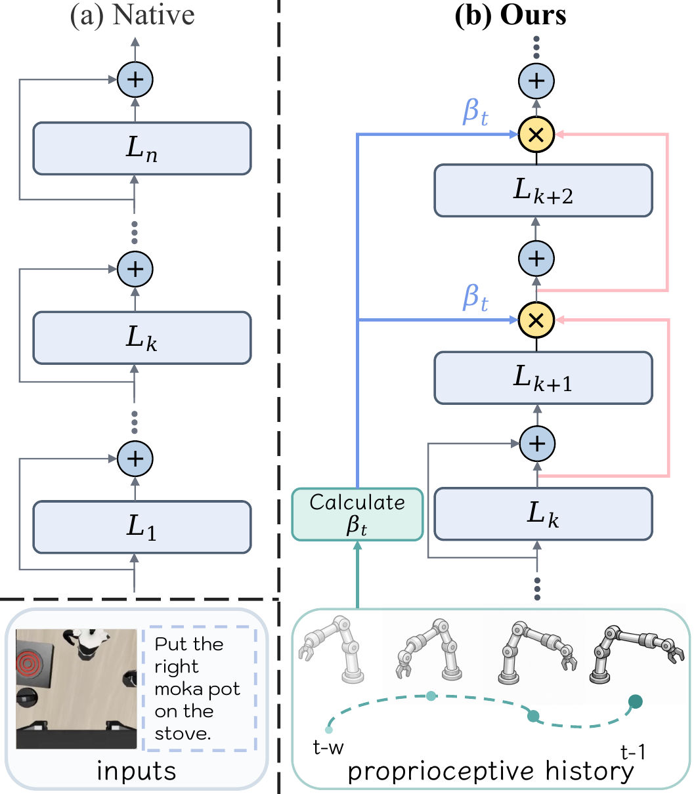

Training-free residual steering
Let Δhtk be the residual update produced by late layer k. STAR combines this current update with the accumulated update trend mtk−1. The resulting trend mtk replaces the original update passed to the next layer. A single coefficient βt is used throughout the forward pass at control step t.
mtk = βtmtk−1
+ (1 − βt)Δhtk
- Keep early layers unchanged. They form language-conditioned visual evidence.
- Mix late-layer updates. The EMA helps this evidence persist across depth.
- Adapt during execution. Mixing is stronger during steady progress and more conservative during rapid transitions or fine adjustments.